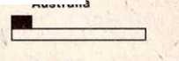

APRIL 1983
Vol. 26. No. 4 FOR UNITED STATES OF AMERICA --,--------_______
Meetings for Field Service
APRIL 4-10
Personal subscriptions
1. Why have your own?
2. How does having them help you make the offer?
3. Why should children have their own?
APRIL 11-17
Spiritual benefits from subscribing
1. How may householders or others benefit spiritually?
2. How can Bible students benefit?
* APRIL 18-24
Attitude toward offer
1. How can it affect subscription placements?
2. How does cost compare with other subscriptions?
3. Why offer subscriptions at every door?
APRIL 25-MAY 1
Practical pointers
1. How do you personally recommend the magazines?
2. Why carry several issues with you?
TOPIC FOR CONVERSATION
Are These the Last Days?
Luke 21:10, 11—What Jesus said.
Luke 21:28—We can survive.
Are You Building With Fire-Resistant Materials?
1 Peter warned the early Christians: “Your adversary, the Devil, walks about like a roaring lion, seeking to devour someone.” (1 Pet. 5:8) Has the Devil lessened his attacks in our day? No, he has intensified them, knowing that his time is short. (Rev. 12:12) We can, therefore, expect that tests of our faith will become even more severe in coming days. How can you best protect yourself and your family so you may all survive these fiery tests? It is by making sure that your faith has been established on the right foundation and has been built with fire-resistant materials.—1 Cor. 3:10-15.
3 The precious metals and stones with which we build are the laws, commandments, principles and precepts as taught in God’s Word and as personified by Jesus in his life. We have learned these through our personal and congregational study and have reinforced them by our application of them in our life.
THE WATCHTOWER— A HELP
’Has not your study of The Watchtower built up your faith with high-quality, noncombustible materials? Look back at the 1982 magazines with their articles on loyalty (March 15, June 1), the resurrection
1 “Keep awake, . . . that you may succeed in escaping all these things that are destined to occur,” Jesus said. What is the big thing “destined to occur” before the generation of 1914 passes away? (Luke 21:32, 36) Is it not the “great tribulation such as has not occurred . . . until now”? (Matt. 24:21) Yes! And what is the first thing that will receive God’s adverse judgment and destruction in that “great tribulation”? Is it not Babylon the Great, the world empire of false religion? Yes, it is!—Rev. 18:21.
3 This being true, what a wave of excitement we felt sweep over us upon hearing the title of the special talk to be given on April 10! “Religion’s Time of Judgment” is the exciting subject. Does it not arouse a feeling of anticipation in you? What will the speaker bring out? A special outline has been provided for all those assigned to deliver this important talk.
3 Who will bring about the destruc-hope (April 1), how the Kingdom comes (May 1), conscience (July 15), guidance for youth (October 15), endurance (December 1) and love (December 15), to mention just a few. Were you not thrilled to learn or to review what the Bible teaches on these subjects and to see examples from the past and present of those who maintained their faith through trials? You likely felt, ‘If they could do it, so can I.’ Yes, The Watchtower has been and is a powerful help in strengthening our faith.
4 While the majority of the brothers have intensified their efforts to have strong faith and confidence in Jehovah’s sure promises, apparently there are some who have not been building with fire-resistant qualities. This shows up in little or no activity in the ministry, failure td attend meetings, or in allowing themselves to become involved in wrongdoing, which leads to being reproved or dis-fellowshipped. Those ‘who are strong feel a debt of love to Jehovah to bear “the weaknesses of those not strong.” (Rom. 15:1; 13:8; Acts 20: 35; Gal. 6:10) Their kindly, loving efforts' are commendable and Jehovah has blessed them. But we should (Continued on page 2, col. 2)
tion of false religion? Has Babylon the Great already captured the attention of her enemies? How can genuine worshipers of God escape false religion’s time of judgment? According to Bible prophecy, what will follow the sudden and unexpected end of all false religion? Are you interested in the answers to these questions? If so, you will want to Ijp present at the Kingdom Hall on Sunday, April 10, to hear the thrilling subject “Religion’s Time of Judgment” discussed by a qualified speaker.
4 Are we not living in exciting times? We see “anguish of nations” and the role religion is playing as it endeavors to stay astride the back of the “wild beast” even while meddling in its affairs. (Luke 21:25; Rev. 17:3-5) And what about the United Nations, as well as “the king of the north” and “the king of the south”? They are acting out their parts as foretold. Now is the time to “keep awake” so that we can “succeed in es-(Continued on page 8, col. 2)
♦ NEW PEAK OF 614,993 PUBLISHERS IN JANUARY! ♦
WEEK STARTING APRIL 3
Song 113
14 min: Local announcements. Discuss Memorial highlights. How many were present? How many in audience had newly interested persons or Bible students at Memorial with them? Did any new ones return for the Sunday meetings on April 3? What can be done this week to encourage attendance at special talk on April 10? Next Saturday is second Saturday of month. Can part of day be used to direct interested one to special talk Sunday? Have attendants distribute one handbill to each publisher. Ask audience to comment on what they plan to say when they invite people in the territory, as well as relatives, Bible students, classmates, teachers or workmates.
12 min: Helping Our Children Understand the Ransom. Use the November 15, 1982, Watchtower, pages 8 and 9, on subject “What Does Jesus’ Death Mean to Us?” Elder conducts discussion of material with group of children on platform. Should be rehearsed in advance.
12 min: “Do Not Miss Special Talk.” Questions and answers. Stress point in paragraph 6 concerning special announcement and the importance of being present for the occasion on April 10.
7 min: Brief discussion of Topic for Conversation and the April offer. Song 96 and prayer.
WEEK STARTING APRIL 10
Song 78
6 min: Local announcements and Announcements. Accounts report.
15 min: “Are You Building With Fire-Resistant Materials?” Talk. Analyze 1 Corinthians 3:10-15 with audience. (See November 1, 1966, Watchtower, pages 649-663.) Note some subjects from past year’s issues of The Watchtower that would help provide fire-resistant materials for children, newly interested persons, those undergoing tests of their faith, and so forth.
10 min: “Presenting the Good News—With the Watchtower Subscription.” Questions and answers. Include two brief demonstrations showing appropriate approach to those religiously inclined and those not. Encourage all to offer subscriptions during April.
14 min: Consider first 10 paragraphs of insert, “Subscriptions
—Wisdom Calling Out’!” Questions and answers.
Song 89 and prayer.
WEEK STARTING APRIL 17
Song 66
5 min: Local announcements. All bring August 15, 1982, Watchtower next week.
12 min: “Are You Using the 1983 Calendar?” Questions and answers. Have family with children on platform. Setting: Right after weekly family study near end of month. Chairman asks questions on all paragraphs. Directs questions to audience on paragraphs 1, 3, 5, 7 and 9. Cover main points in paragraphs 2, 4, 6 and 8 by a very brief demonstration of the points by family group using the calendar.
20 min: Consider paragraphs 11 through 22 of insert, “Subscriptions —‘Wisdom Calling Out’!” Questions and answers.
8 min: Support fourth Saturday, magazine day. April 23 is fourth Saturday this month. Will you make it a special magazine day? Discuss
Building (Cont'd)
all see the need to develop Christlike qualities that can fireproof our faith.
5 An important beginning in the fireproofing program is personal study. Get to know Jehovah better by reading about his qualities, dealings, attitudes and purposes. Study the life and teachings of Jesus and imitate him by letting God’s thoughts govern your life. (John 14:9-11) Incessantly appeal to Jehovah in prayer. (1 Thess. 5:17) Act in harmony with your prayers and then respectfully accept and apply his answers in your life. You will find that when future fiery tests come your way, rather than being devoured, your faith will be refined and purified.
HELPING YOUNG, INACTIVE AND NEW ONES
6 A vital part of our ministry is using God’s Word to train our children and to help interested persons to make over their personalities. Recently, much commendable work has been done rebuilding the faith of inactive ones by having Bible studies with them. As we study with all persons we will want to educate, train and discipline them in heavenly wisdom and spiritual discernment. Help them to cultivate godly qualities, loy-talking points from latest issues. Include one or two 30- to 60-second presentations. Encourage support. Song 70 and prayer.
WEEK STARTING APRIL 24
Song 14
8 min: Announcements.
15 min: Talk on “Mildness Has Power.” (See September 1, 1982, Watchtower, pages 8-11.) Include personal expressions from audience about incidents they know of where this principle worked and/or' how some have had to cultivate this quality upon learning the truth.
12 min: “Solving Difficulties With Love.” (See August 15, 1982, Watchtower, pages 16, 17.) Questions and answers.
10 min: Arrange according to local needs. Elders may want to schedule a talk on “TV Soaps—Are They Affecting You?” based on the two articles in the December 1, 1982, Watchtower, pages 3-7. Remind congregation that May 1 is the first Sunday of the month.
Song 108 and prayer.
alty and devotion to Bible principles. They need to become true disciples of Christ. Help them to see how The Watchtower has assisted you. As their Christian personalities are developed through study and training, we will see them successfully face up to fiery tests. What a joy it is to know that with God’s help we can assist others to build fire-resistant qualities!
7 During April we will again have the pleasure of offering the Watchtower subscription for $3.50 a year. Recognizing its tremendous value and the influence for good it has had on our life, we should enthusiastically take advantage of every opportunity to encourage others to start reading it.
8 As Paul wrote at 1 Corinthians 3:9, we are “God’s field under cultivation, God’s building.” So we should let Jehovah do a building work in us by giving proper attention to the provisions he has made through his organization. As we draw closer and closer to the end, we can feel the pressures increasing. This does not make us give up or crumble under the heat that Satan is putting on us. Rather, we wisely build our defenses Stronger by making sure we are building with fire-resistant materials.—Gal. 6:9, 10.
Our Kingdom Ministry (USPS 295-360) is published monthly by Watchtower Bible and Tract Society of New York, Inc., 25 Columbia Heights, Brooklyn, N.Y. 11201. Second-class postage paid at Brooklyn, N.Y. POSTMASTER: Send address changes to Watchtower, 25 Columbia Heights, Brooklyn, N.Y. 11201. Printed in U.S.A.
In 1939, the year of the first Watchtower subscription campaign, 67,229 publishers from 59 countries placed 121,073 new subscriptions. Today The Watchtower is published in 102 languages and Awake! in 52. Subscriptions are available in those languages listed on page 2 of the magazines. With The Watchtower and Awake! available in so many more languages, what will be the result in our subscription campaign this April and May?
1 Apart from the confused din of human wisdom, one voice is distinct, speaking truth and pointing to God’s Kingdom as the only solution for mankind’s problems. That voice is The Watchtower. For the past 103 years The Watchtower (later joined by Awake!) has been like -‘wisdom calling out.’ It has been helping millions to emerge from the jumble of false religious teachings and worldly ideas into the clear pathway of a better “life now' and that which is to come.” (Prov. 8:1; 1 Tim. 4:8) We hear its cry and respond favorably. Can we help others to do likewise?
POSITIVE VIEW NEEDED—DO YOU HAVE IT?
2 How important is The Watchtower to your spiritual life? Is it vital? If so, you will read it regularly because, as stated in its purpose on page 2 of each issue, The Watchtower “adheres to the Bible as its authority.” And you would want others—your family, friends and neighbors—to read it regularly too. With the exception of the Bible, do you know of any other literature that supplies as much divine wisdom as does a year’s subscription to The Watchtower? Are you personally a subscriber? Are your family members subscribers?1
3 Having a positive attitude toward The Watchtower entails maintaining a proper appreciation for its contents. Then, once we are convinced of its unique value, we will eagerly look forward to each issue, read it and not hesitate to offer it to others in our field service. What the book of Proverbs says about wisdom can help us estimate the value of this journal in comparison with other magazines:
“True wisdom has built its house; it has hewn out its seven pillars. It has organized its meat slaughtering; it has mixed its wine; more than that, it has set in order its table. It has sent forth its lady attendants, that it may call out on top of the heights of the town: Whoever is inexperienced, let him turn aside here.’ Whoever is in want of heart—she has said to him: ‘Come, feed yourselves with my bread and share in drinking the wine that I have mixed. Leave the inexperienced ones and keep living, and walk straight in the way of understanding.’”—Prqv. 9:1-6.
4 Godly wisdom described in this chapter, as well as in Proverbs, chapter 8, is in sharp contrast to the immoral wisdom of the world depicted in chapter 7. Unlike the sly harlot who lurks secretly in darkness, trapping her prey and leading the victim “to the interior rooms of death,” wisdom issues its call publicly “on top of the heights.” It invites its hearers into its sturdy and well-supported mansion of “seven pillars.” (Prov. 7:27; 8:2; 9:1) Thoughtfully, wisdom organizes a banquet of fresh food and drink to nourish the mind and heart of its guests.
5 How well this proverbial illustration can be extended into our modern spiritual life! “The faithful and discreet slave” class sees to it that Christ’s “domestics” and their “other sheep” companions are properly fed spiritually. (Matt. 24:45; John 10:16) How is this done? Primarily through the Watchtower magazine. Much forethought and planning are necessary in preparing for a successful banquet and this is also true with The Watchtower. Its articles, like ‘meat’ and ‘mixed wine,’ make Jehovah’s people spiritually strong and happy. (Prov. 9:2) Note how some Kingdom publishers feel ’ about recent issues:
• “First of all, they cleared up areas of Scripture I was never sure of. Second, they opened up new areas of thought for further study. But more than that, they made me feel closer to Jehovah, like a more personal friend.”
• ‘With the vexation of this present evil system of things, there are constantly new problems to face. The Watchtower and Awake! assist us in facing and solving those problems as they appeal-.”
• “Thank you, Watchtower, for working hard in establishing a ‘spiritual consciousness’ in every reader the wide world over.”
Is that how you feel about The Watchtower and Awake!?
WHY HAVE A PERSONAL SUBSCRIPTION?
6 If each member of your family has a subscription, at least for The Watchtower, if not for both magazines, arrival of each issue by mail is as if ‘wisdom is calling out.’ A fresh reminder to partake of spiritual nourishment is thus
3 OUR KINGDOM MINISTRY, APRIL 1983
given. But cannot the same spiritual feeding be received by regularly picking up your personal study copies at the Kingdom Hall? Yes, providing one does not fail to pick up the copy as soon as it arrives. Yet there are advantages in receiving your personal copies in the mail. What are they?
7 For one thing, your spiritual meal is served in your home where it may be more convenient to read one or two articles right away. If the magazines were picked up at the Kingdom Hall you would have to wait until later that day to read them, if you are not too tired to do so. Also, if you were to pick up personal copies at the Kingdom Hall you might receive two issues at the same time. Especially would this be true if you missed a meeting due to illness. Home delivery is spaced evenly, one issue per'week. Both reasons show that personal subscriptions are advantageous in keeping your personal study on schedule. This, in turn, helps you spiritually, as well as those to whom you preach. Remember, more reading done, more confidence at the door. They go hand in hand.
8 Has this ever happened to you? You search high and low but you cannot find your study copy of The Watchtower. Only later you discover that you placed it in field service. Having a personal subscription will eliminate that annoyance. It is not likely that you will place your own copy of the magazine, especially if you have studied and marked it. Can you think of any more advantages?
’Children are greatly benefited by having their own subscriptions. What child does not enjoy receiving his own mail? In one South American country two daughters thanked their mother for their own individual Watchtower subscriptions, saying: “This is the best present you have ever given us!” And here is what some of our brothers from different countries have said about the value of publishers having personal subscriptions:
• FRANCE: “I know a family where each member receives his own personal copy by subscription. They are much more inclined to read them and the good effects are evident when they present them at the door.”
• BRAZIL: “A girl of six years has her own subscriptions. The father firmly believes that for children to have their own subscriptions to the magazines, even though they are very young, teaches them the value of the magazines and the need to take care of them.”
• SOUTH AFRICA: “My parents were not wealthy, yet all four of us. children had our own subscriptions. I always thought the Society knew me personally. The magazine was addressed to me and only I opened it. Even before we could read we had our own Watchtower."
• UNITED STATES: “I was one of four children. It was the Depression. Money was hard to come by, but I worked mowing grass to pay for my own subscription just for the joy of receiving it in the mail, labeled with my own name.”
10 Do you have your own Bible and your own songbook? Then why not your own subscription? Once you are convinced of the unique benefits of our two magazines, it becomes natural to want to convince others of their value too. Be positive in your attitude toward ‘wisdom calling out’ through The Watchtower and Awake! How can this be done?
CONFIDENTLY PRESENT SUBSCRIPTION OFFER
11 The apostle Paul did not hesitate to share the good news with others. Rather, he spoke “boldly in the name of Jesus.” (Acts 9:27) Wisdom’s figurative lady attendants confidently “call out,” inviting inexperienced ones to taste of Jehovah’s wisdom. Our neighbors feasting on God’s wisdom in The Watchtower and Awake! would likely improve their life and establish right motives in their heart. People need this if they want to “keep living.” (Prov. 9:3-6) When in field service we, too, need to muster up boldness by means of our God and confidently offer the subscription to each householder. —1 Thess. 2:2.
12 ‘But the householder does not want a subscription,’ you may say. Leap over that negative mental obstacle! Often it is not that the public is unwilling but, rather, that our own attitude toward subscriptions needs to be changed. Consider these examples:
• “When serving congregations during the months of the subscription campaign, I stress offering the subscription at every house and not wondering if we should. Let the householders make the decision. Don’t make it for them. Publishers have come back from the field and said: ‘I really didn’t think they were interested, but I offered the subscription and they took it.’ ”—Circuit overseer, United States.
• “A lady refused the two individual magazines. We explained that we are not peddlers. Explaining that it was possible to subscribe to both, were we surprised when the lady accepted our offer! What lesson can we draw from this experience? Propose the offer systematically. Then leave the decision up to the person.”—District overseer, France.
• “One publisher with whom I worked said he had never obtained a subscription although he had been a publisher for 20 years. When asked what the problem was, he answered: ‘The people just aren’t interested in a subscription. So what’s the use of offering it?’ At the first house I offered the subscription and the householder took a double subscription. So I encouraged the brother to try at the next house. He did so.
To his amazement he also placed two subscriptions.” —Circuit overseer, Brazil.
13 Do you feel that the day of the magazine is finished? The above experiences and the following statistics for the United States prove otherwise. One survey shows that during the past 30 years, 1951-1981, secular magazine circulation in the United States grew by 92 percent—nearly twice as fast as the population. In the past three years, circulation grew three times faster than did the population. In addition, statistics show that today 9 out of 10 adults in the United States are monthly magazine readers and that they each read an average of nearly eight magazines per month!
14 Therefore, do not entertain a negative misconception but be positive. In order to offer the subscription do not look for more than “normal
COST OF MAGAZINE SUBSCRIPTION IN NINE COUNTRIES
■ Watchtower Cost
□ Average Cost of Leading Magazines
Watchtower Other mags.
France
Watchtower Other mags.
Great Britain
Watchtower Other mags.
Watchtower Other mags.
Watchtower Other mags.
United States
Nigeria
South Africa
Australia
Watchtower Other mags.
Brazil
Canada
Watchtower Other mags.
Federal Republic of Germany
Watchtower Other mags.
Wa 'ch tower Other mags.
0 1 2 3 4 5 6 7 8 9 10 11 12 13 14 15 16 17 18 19 20
Unit price
'Each unit equals cost of Watchtower subscription. interest.” Confidently present the subscription offer AT EVERY HOUSE.
SUBSCRIPTION IS PRICED RIGHT
15 Important, too, is our attitude toward the subscription rate. It is true that in some countries, due to postage, it is more expensive to receive 24 copies of the magazine in the mail than it is to purchase single issues. For example, Japan’s one-year subscription rate is $7.20 (U.S.) as compared to $4.80 (U.S.) for 24 single copies, or half again more expensive. Yet the publishers there placed 124,852 subscriptions during 1982, the highest total of any country outside the United States. The subscription price is at the level it should be. “Brothers in business, who are acquainted with price rises, have no hesitation in presenting the subscription offer,” reports the Watch Tower Society’s branch office in South Africa. In 1981 the average price in the United States for popular magazines was $1.62 per copy and the average one-year subscription was $18.06. In addition, for many people a subscription is the only way that they can regularly receive the magazines.
16 In Brazil one Kingdom publisher noted: “Do not take for granted that certain people will not have money for a subscription. Many people spend money on items that not only are of little value but actually are harmful, such as tobacco. One publisher hesitated tp offer the subscription to a poorly dressed elderly man whose house was also run down. He not only subscribed but also added, that he'would place a special box at his door to receive the magazines.” And as some publishers like to point out, the cost of a yearly subscription is less than the cost of one meal in a restaurant or the cost of a haircut.
WAYS TO OBTAIN SUBSCRIPTIONS
17 Subscriptions can be obtained in the following ways: house to house, return visits, street witnessing, business witnessing, from neighbors, fellow workers or schoolmates, from Memorial attenders and as gifts to relatives. Do your Bible students have their own subscription? Can you think of any others?
18 Here are some of the ways our brothers have obtained subscriptions:
HOUSE-TO-HOUSE WITNESSING: “My wife makes good use of outstanding news events and includes them in her Topic for Conversation. In one day she obtained 10 subscriptions.” —Circuit overseer, France.
RETURN VISITS: “During one month I was able to obtain 10 double subscriptions and start two new home Bible studies.”—Elder, Federal Republic of Germany.
STREET WITNESSING: “I approached a woman and asked her if she had ever read the magazines. She answered, “Yes, several months ago.’ I used this opportunity to offer the subscription and obtained a double subscription.” —Publisher, Federal Republic of Germany.
GIFT SUBSCRIPTIONS: “Since my auto mechanic was so kind to me, I sent him a gift subscription to show my appreciation. Seven years later not only the mechanic but more than a dozen people have taken a firm stand for the truth.”—Publisher, Australia.
FELLOW WORKERS: “One brother obtained 41 subscriptions in one month at his place of work. His presentation was simple, merely asking his co-workers if they liked good reading material. If the answer was in the affirmative, he offered the subscription.”—Publisher, Brazil.
MAGAZINE ROUTE WITNESSING: “On my magazine route I plant the ‘seed’ of subscribing in the householder’s mind by saying: ‘Have you ever thought of a subscription to these two magazines?’ And I would mention it each time I would call. Eventually most would subscribe. I average 150 subscriptions a year.” —Publisher, United States.
PRACTICAL POINTERS
19 The following suggestions come from around the world. Can you use some of them to good advantage in your local territory?
• Tell how long you have been receiving the magazines by mail.—United States.
• Show the inside cover, highlighting the international readership in view of the number of languages and circulation figures.—South Africa.
• Show how articles are continued on successive pages, thereby eliminating the need to search from one page to another, as is the style in many other magazines.—Canada.
• Use tract Are We Nearing Armageddon? (Kingdom News No. 31), with its illustrations of a paradise earth on page 2 and the magazines on page 3, as a stepping-stone to introducing the subscription offer. —United States.
• Carry with you several different issues, illustrating the variety of subjects covered.—Brazil.
• Take along with you your own personal subscription wrapper with your printed name, showing how they will come through the mail.—Australia.
• Take along your personal copy of The Watchtower that is all marked up for the study and read some of the high points that you found to be interesting. Then take a new copy from your bag and offer it.—United States.
• Bring a bound volume on a Bible study or a return visit, explaining that for $3.50 a year they will be getting a 768-page reference, similar to a Bible encyclopedia.—United States.
20 The word “subscription” frightens many householders. They associate that word with “joining” something or with “worldly salesmen and fraud,” report a number of Watch Tower branches. Therefore, some Kingdom publishers have found the following expressions advantageous:
• “You will be visited twice a month by a magazine that would be brought to you discreetly by the mailman.”—France.
• ‘You can receive the next 24 issues directly from the publishers by means of mailing.”—Nigeria.
• “The magazine will be sent for one year without further obligation. The mailing will stop' automatically after one year unless you renew it yourself.” —France.
• “I have this magazine posted regularly to my home and have found that it really benefits my whole family. You can order a year’s supply of this magazine too.”—Australia.
• ‘You will receive a one-year course in the Bible with printed questions for some of the articles.” —United States.
21 The first Watchtower subscription campaign began in January 1939. Its goal—100,000 new subscriptions. Was it reached’ Yes! The 191f0 Yearbook of Jehovah’s Witnesses announced 121,073 new subscriptions obtained by 67,229 publishers from 59 countries. Northern Europe more than doubled their subscriptions, prompting this response as reported in the 19J/0 Yearbook: “Prior to this campaign we had never imagined it possible to secure Watchtower subscriptions in door-to-door work, but the Lord is in charge of his organization and is continually giving us delightful surprises if we but obey the instructions we receive.”
22 Can we set our own personal goal? Strive for at least one new subscription per publisher and four per pioneer. Will you do your utmost to. let ‘wisdom call out’ by keeping busy in magazine witnessing? If you do, you will be helping yourself and others to “walk straight in the way of understanding.”—Prov. 9:6.
Are You Using the 1983 Calendar?
1 When was the calendar invented? Long before man appeared on the scene! “And God went on to say: ‘Let luminaries come to be in the expanse of the heavens to make a division between the day and the night; and they must serve as signs and for seasons and for days and years.’” (Gen. 1:14) Yes, as Jehovah follows a schedule of events, he made it possible for man to do the same. In fact, the verb form of the word calendar refers to entering or scheduling.
A HELP TO IMPROVE FIELD SERVICE
2 The Society has provided us with a beautiful calendar for 1983. Are you using it to schedule your activities? It can help you to reach your personal goal for field service from month to month rather than leaving such to chance. The suggestion has been made to use a few minutes, perhaps at the time of your last family Bible study of the month when all are together, to plan the following month’s field service activity. The days and even the number of hours each one plans to use can be penciled in on the calendar. Could such a schedule help you to do more in field service than you are presently doing?
’When you think about it, are not those hours spent in the preaching and teaching work among the most precious ones of the month? Should not other activities be made to fit around those times especially devoted to Jehovah’s service? They represent an important part of our sacred service, our monthly sacrifice of praise offered to him. “For everything there is an appointed time, ... a time to keep quiet and a time to speak.” (Eccl. 3:1, 7) Even less important things are not left to chance, so we should have a planned, scheduled “time to speak” about Jehovah, his Son and his Kingdom. Of course, we should speak about those things at any appropriate time, but we are now concerned with scheduled times for public preaching. A good schedule will help us do what David foretold when he said: “About the glory of your kingship they will talk, and about your mightiness they will speak.”—Ps. 145:11.
OTHER USES
4 How else can we use the calendar? We can enter such things as circuit assembly and district convention dates, as well as the dates of approaching visits by traveling overseers. With these events in mind, vacation dates and months for auxiliary pioneering can then be planned. In this way we would not inadvertently schedule things of less importance that would interfere. Making good use of the calendar can help us to “go on walking orderly in this same routine.’’—Phil. 3:16.
5 The Bible reading schedule for each week is printed on your calendar. Some write in a set time each week to do the reading, and they stick to it. The psalmist suggests that you do Bible reading daily.—Ps. 1:2.
WHAT ABOUT THE PICTURES?
6 Have you taken time to meditate on those beautiful scenes? Do they not give you a feeling of international brotherhood? They remind us of the unexcelled unity that exists in Jehovah’s organization as we all do the same work around the earth! Do you have small children? What could you teach them from the pictures about Jehovah’s organization and our work? With your help they, too, can come to appreciate the global scope of our work and brotherhood.
7 Have you thought about using the pictures as a basis for informal witnessing? When relatives, neighbors, salespeople or others are in your home, you could call their attention to the pictures and perhaps a conversation about the truth will ensue. They may come to appreciate that we are truly a society of international praisers of our God, Jehovah.
8 Yes, there are a multitude of uses for our 1983 calendar. Does it not keep you more conscious of the yeartext? Have you used it to help keep appointments for return visits or to make special calls on interested persons found in the territory? Do you jot down the hours and minutes you have spent in service so your monthly report will be accurate? You may find yet other theocratic uses for the calendar.
8 Do you have your calendar located in a convenient place? Where it will best serve the family? As a daily reminder of spiritual things, may it help us all to lead well-ordered lives. Jehovah is the great God of order. (1 Cor. 14:33) He wants us to “let all things take place decently and by arrangement.” (1 Cor. 14:40) Our beautiful 1983 calendar can help us to do so.
• District convention lapel cards in English and Spanish and the plastic holders should be ordered by the congregations on the Literature Order form (S-14). Orders may be sent to the Society after April 1, 1983.
• Literature offer for April and May: Subscription to The Watchtower for $3.50. Six-month subscriptions are $2.00. Awake! subscription may be offered on the same basis. June and July: Offer “Let Your Kingdom Come,’’ for 75c. As an alternative, when publishers meet those with a reading problem or parents with young children, offer the brochure Enjoy Life on Earth Forever!, for 25c.
• In the United States the Urdu Awake! will not be available by distributor orders through the congregations. This announcement supersedes the announcement that appeared in the January 1983 Our Kingdom Ministry regarding a number of quarterly editions of Awake! that are available by distributors', order.
• New Publications Available:
Aid to Bible Understanding (Volume 13, Di-Eb) —Italian
Enjoy Life on Earth Forever!
—Bambara, Chichewa, Kiluba, Korean, Tongan, Tshiluba, Tuvaluan, . Ukrainian
• New Cassette Recordings Available: The First to the Corinthians (single cassette) —French
The Second to the Corinthians, To the Galatians (single cassette) —French
The First of Peter through The Letter of Jude (single cassette) —Finnish
A Revelation to John (single cassette) —Finnish
My Book of Bible Stories (four cassettes in album) —Danish, Swedish
JANUARY SERVICE REPORT Av Av Av Av
Pubs. Hrs. Mags. R.V. Bi.St.
Sp'l Pios. 400 132.0 80.3 55.0
Aux. Pios. 22,129 60.5 30.7 19.4
TOTAL 614,993
Newly Dedicated Ones Baptized: 2,682
The total publishers for January is a 5.7-percent increase over last year's average. Compared with January a year ago, 44,745 more publishers reported. The number of regular pioneers is our fifth peak in a row. A new peak of 396,247 home Bible studies was reported, 4 percent better than the previous peak last November. Let us continue to show by our vigorous support of all features of the ministry that we are grateful to Jehovah for speeding up the Kingdom work.—Isa. 60:22.
Schedule for congregation studies in the book Man’s Salvation out of World Distress at Hand!:
April 3: Pages 2922 to 300
April 10: Pages 301 to 3092
April 17: Pages 3092 to 316#
April 24: Pages 317 to 325#
PRESENTING THE GOOD NEWS
With the Watchtower Subscription
1 Have you ever wondered why some publishers have so much success in obtaining subscriptions to The Watchtowe/, while others say, ‘I find it difficult to get a subscription’? Do some have more ability? Some may express themselves better than others, but this does not necessarily bring success in obtaining subscriptions. Why not ask yourself, How do I feel about offering a subscription to The Watchtower? Your answer to that question may determine how successful you will be. Do you feel more comfortable just offering the magazines or a book and thus limit yourself in this way? If so, it may be that you need to cultivate a more positive attitude toward offering subscriptions.
2 Recognizing a problem is the first step to overcoming it. To cultivate a more positive attitude, talk to those who obtain subscriptions regularly. Note their enthusiasm and the initiative they show in looking for opportunities to offer subscriptions. Recognize how valuable the magazine subscriptions can be in helping others come to know Jehovah. These steps can assist you in successfully proclaiming the good news with the Watchtower subscription.
3 Another factor to consider is preparation. Do you have a presentation that will stimulate interest in the Watchtower subscription? Are you adaptable? Basically, there are two types of people we confront in our door-to-door ministry: (1) Those who are religious and manifest a belief in the Bible; (2) those who no longer are interested in religion or the Bible. How do you deal with these situations?
SUGGESTED PRESENTATIONS
4 With a religious person you might begin by saying: “It is good to find individuals who are still interested in the Bible. It seems that many consider the Bible as just another book. As a reader of God’s Word, what practical benefits has its message brought to your life?” (If householder responds, listen closely and comment on positive points.) You might then comment that while many people read the Bible they fail to benefit because of pot understanding what they read, and add: "The Watchtower has been of assistance to me in gaining a better understanding of God’s Word. In fact, millions have found that it has greatly increased their understanding of the Bible.” Then show them an interesting point in the magazine. Conclude by saying: “We are happy to be able to offer a subscription to The Watchtower, which would include 24 issues, for only $3.50.”
5 What if the person says he is not interested in religion or the Bible? You could reply: “Many people feel that way today. Why do you think this is true?” (Listen carefully and, if possible, make a positive comment on the householder’s expressions.) You could then mention that many have lost faith in God and the Bible because of what people do who profess to believe in God. Others have felt that science and its teachings out-date the Bible. You could ask: “Did you ever wonder, though, why the Bible is still the world’s best-seller? For over 100 years The Watchtower has helped millions to see the value of God’s Word. How? By supplying reasonable, practical guidance based on Bible principles.” (Direct householder’s attention to a specific point in the current magazine.) In conclusion, say: “You can receive 24 future issues of The Watchtower through the mail for only $3.50.”
6 How will you present the subscription offer? Remember, a positive attitude will contribute to your success.
THEOCRATIC NEWS
♦ A brother In Macao obtained 82 new subscriptions in November and 200 in December.
♦ Uganda had a district convention with 385 in attendance and 30 baptized, although there were just 182 publishers reporting in December. The brothers were very enthusiastic and appreciative of this convention. It is reported that several had to use more than a whole month's salary tor transportation in order to attend.
♦ The Philippines reported the highest attendance ever at their 19 district conventions—147,604. The total baptized was 1,554, the largest number on record at a convention series since 1975.
♦ The 3,002 publishers in Guadeloupe rejoiced to have 6,008 present tor their circuit assemblies in December. A 24-percent increase in Bible studies over the same month a year ago was reported there.
• Should the Theocratic Ministry School be conducted before the Service Meeting on the day that these two meetings are held, or is this left for the elders to decide?
Some elders have written to the Society asking if it is permissible for them to schedule the Service Meeting first on the evening that the Theocratic Ministry School and Service Meeting are held. Some congregations apparently have made this arrangement. We encourage all congregations to have the Theocratic Ministry School first, followed by the Service Meeting. The way the Service Meetings are outlined in Our Kingdom Ministry indicates this preference. The outline shows a song with no prayer at the beginning of the Service Meeting, indicating that this is not expected to be the first meeting for the evening. The outline concludes the Service Meeting with a song and prayer, indicating the close of the program for the day’s meeting.
We recognize there may be some advantages to having the Service Meeting first. However, sifter reviewing various reasons presented, we feel that the arrangement outlined herein is the best overall. We feel that it is best to end the two meetings with the fine encouragement contained in the Service Meeting.
If congregations have arranged to have the Service ^Meeting first, we encourage them to make adjustments in harmony with what is outlined here. We want to maintain a uniform arrangement wherever this is possible. All should be urged to be in attendance at both meetings. Encourage everyone to be there to share in the opening song and prayer and to remain to benefit from the closing prayer.
8
The United States branch recommends that publishers obtain their personal copies of magazines by subscription rather than at the Kingdom Hall.
To or from subheading.
# Include last paragraph on page.
Special Talk (Cont’d)
caping all these things that are destined to occur.”—Dan. 11:40; Luke 21:36.
5 The special talk will help us to see how we and others can escape. Help others to see the value of spending 45 minutes learning about “Religion’s Time of Judgment.” Invite them. Remind them. Bring them.
6 A special announcement that none will want to miss will be made on this occasion. Congregations that are having the visit of the circuit overseer or attending circuit assemblies will have the same announcement made for their benefit as well.
7 As the end of the present ungodly system draws near, Jesus alerts us to keep awake! It is a time “for us to pay more than the usual attention to the things heard.” Paul asks the searching question, “How shall we escape if we have neglected a salvation of such greatness in that it began to be spoken through our Lord?” (Heb. 2:1, 3) Let us all encourage and help one another to be present for the special talk on April 10.